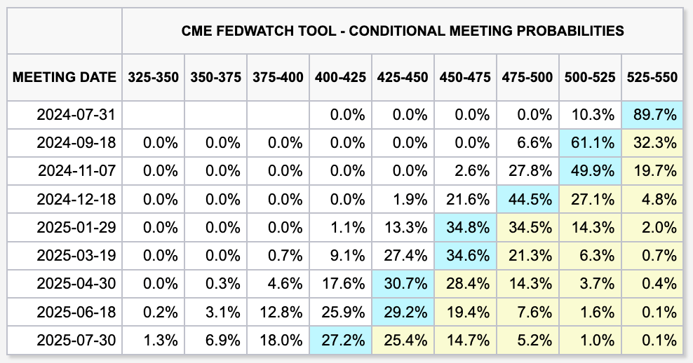

PPI는 또 왜이래?
경제
//
2024년 06월 13일 작성
CPI가 나오고 다음 날은 PPI가 나온는 날이고 어김없이 또 PPI가 나왔다. CPI에 비하면 조금은 소외되는 지표지만 다음 CPI를 가늠하는 키 중 하나이기도 해서 요즘은 무시할 수가 없다.
미국 5월 PPI(생산자물가지수)는 대충 요렇게 나왔다.
- 헤드라인 PPI: MoM -0.2% (-0.7%), YoY 2.2% (-0.1%)
- 근원 PPI: MoM 0.0% (-0.5%), YoY 2.3% (-0.2%)
헤드라인 CPI MoM 지표가 0%가 나온 것도 놀랬지만 이번에는 아예 대놓고 마이너스가 나와버렸다. 물가상승률을 의미하는 인플레이션이 아닌 디플레이션 지표가 되어버리고 말았다. 굳이 언급할 필요도 없겠지만 예측치를 모두 하회한 것은 당연하다.
CPI와 비슷하게 이번 PPI를 이렇게 꺽어버린 요인은 역시나 에너지 특히 유가 하락분이 컸던 것 같다.
그래서 시장은 뭔가 반응이 좀 있을까? 잘은 모르겠지만 개장 때와 지금은 분위기가 좀 다른 것 같다.

요즘은 FedWatch를 봐도 별 느낌이 안 온다. 아무래도 금리 인하가 없는 세상에 너무 익숙해진 것 같다. 그 덕분인지 아니면 이게 정상인지 모르겠지만 7월 기준금리 인하 가능성은 여전히 소외되고 있는 선택지다. 물론 개인적으로도 9월 인하 가능성이 높지 않을까 찍고(?) 있기도 하다.
결론적으로 이걸 좋게 봐야되나 나쁘게 봐야 되나 이제는 아무 생각이 없다.